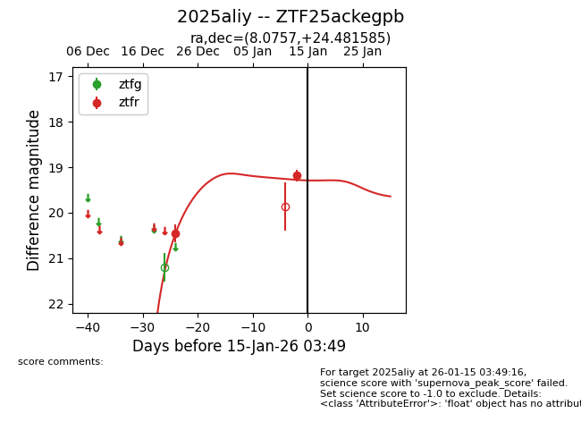
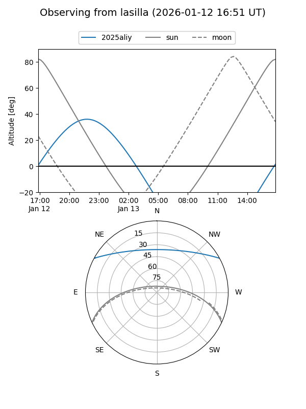
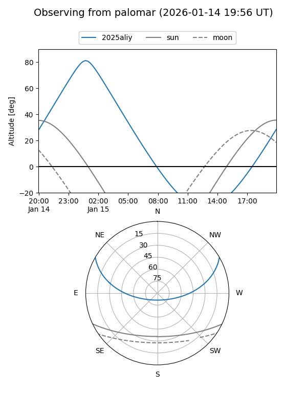
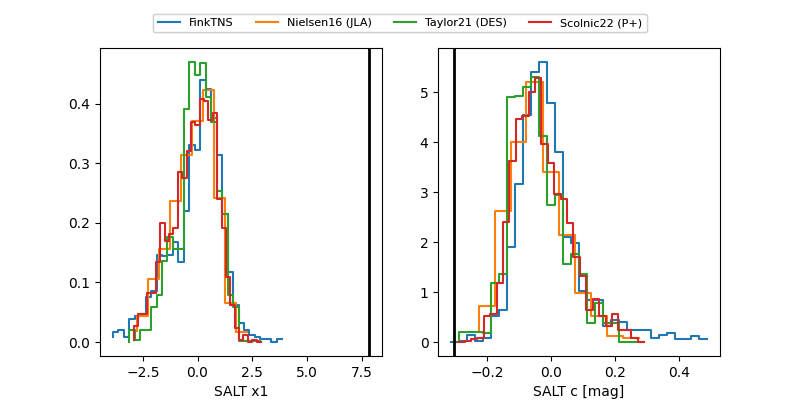

2025aliy
Target 2025aliy at 2026-01-13 03:45
Aliases and brokers:
FINK: link
Lasair: link
ALeRCE: link
TNS: link
YSE: link
alt names
ZTF25ackegpb (ztf,fink_ztf)
2025aliy (tns,yse)
Coordinates:
equatorial (ra, dec) = 8.0757,+24.48158
equatorial (HMS+DMS) = 00:32:18.17,+24:28:53.71
galactic (l, b) = (117.3909,-38.18420)
Flags:
Photometry:
last ztfr=19.18
2 ztfr detections
Lightcurve

Visibility


Additional plots
